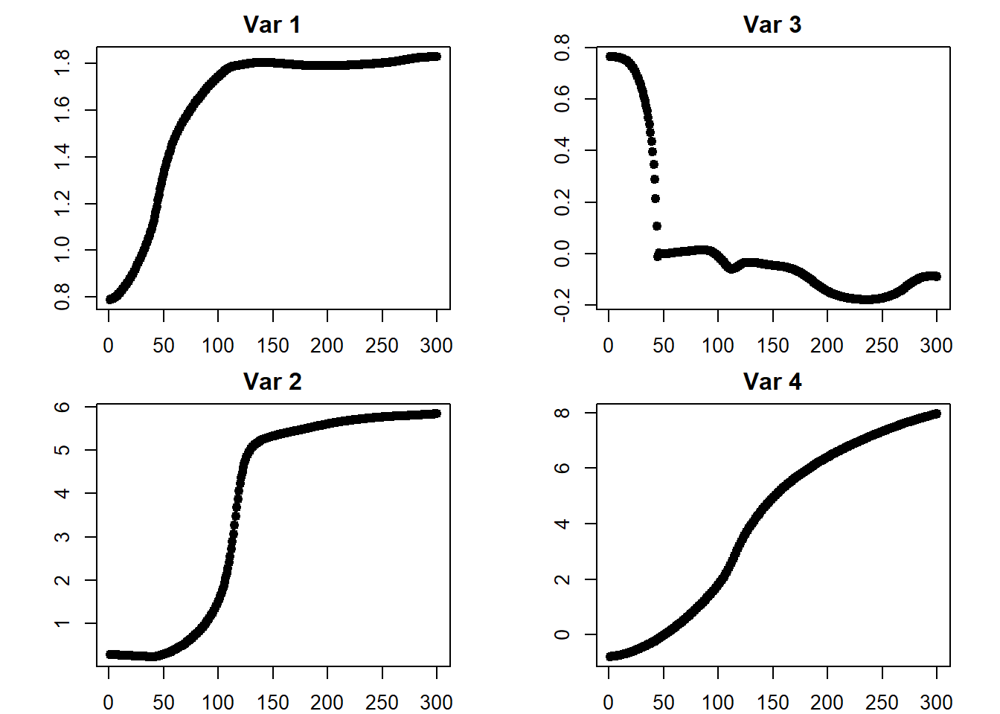
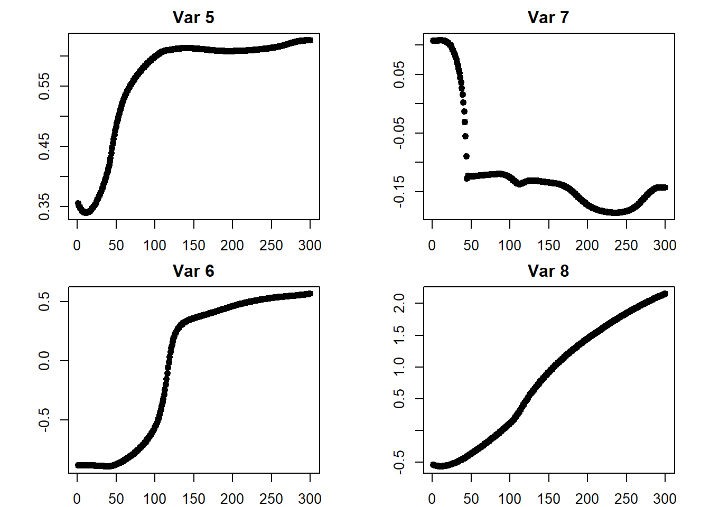
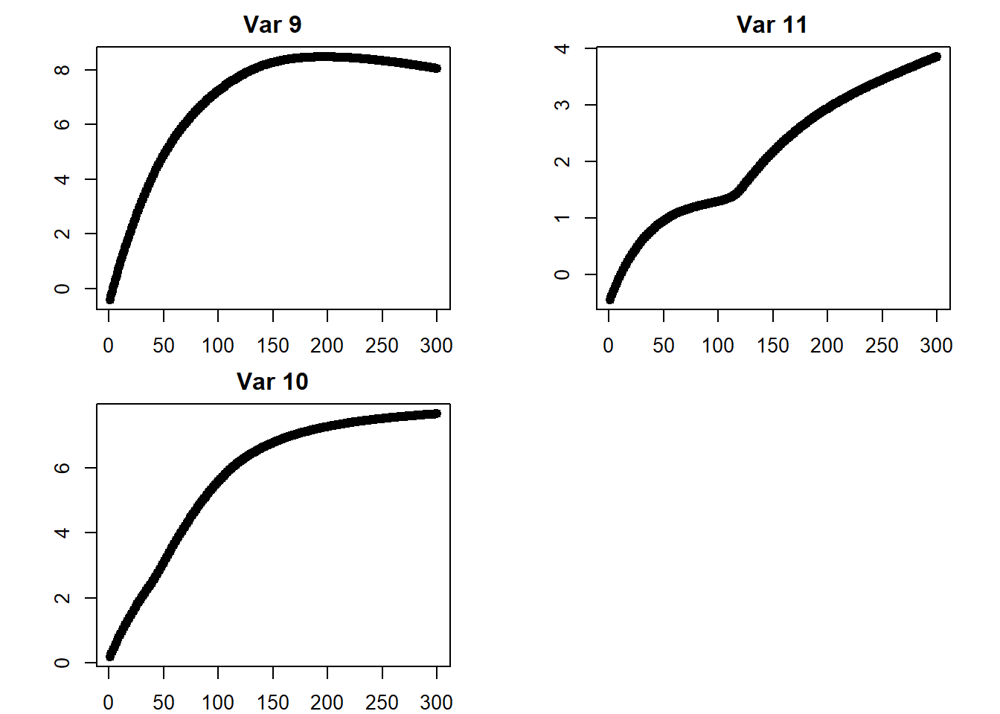

Chapter 2 Single-Layer NN Notes
These are notes for a single-layer neural network, mostly based off of An Introduction to Statistical Learning.
This chapter starts by outlaying some concepts and notation, then proceeds with an example of a single-layer neural network implemented ‘by-hand’. The notation is quite non-standard and will be refined in later chapters.
Gareth James, Daniela Witten, Trevor Hastie, Robert Tibshirani. An Introduction to Statistical Learning: with Applications in R. New York: Springer, 2013.
2.1 Model Form
We have an input vector of p variables \(X = \{x_1, x_2, \dots, x_p\}\), and an output scalar Y. We want to build a function \(f: \mathbb{R}^p \to \mathbb{R}\) to approximate Y.
For a single layer NN, we have an input layer, hidden layer (with K activations), and output layer. Thus, the model’s form is:
\[ \begin{aligned} f(X) &= \beta_0 + \sum_{k = 1}^K \left[\beta_k * h_k(X)\right] \\ &= \beta_0 + \sum_{k = 1}^K \left[\beta_k * g\left(w_{k0} + \sum_{j = 1}^p[w_{kj} * X_j]\right)\right] \end{aligned} \]
we have k indexing our hidden layer neurons, j indexing the weights within each neuron as they relate to each input variable \(\{1, 2, \dots, p\}\). \(g(\cdot)\) is our activation function.
This model form is built in 2 steps:
\(h_k(X)\) is known as the activation of the kth neuron of the hidden layer; it is denoted \(A_k\):
\[A_k = h_k(X) = g\left(w_{k0} + \sum_{j = 1}^p[w_{kj} * X_j]\right)\]
These get fed into the output layer, so that:
\[f(X) = \beta_0 + \sum_{k = 1}^K (\beta_k * A_k)\]
2.2 Activation Functions
2.3 Loss Functions
For a quantitative response variable, typical to use a squared-error loss function:
\[\sum_{i = 1}^n \left[(y_i - f(x_i))^2\right]\]
For a qualitative / categorical response variable, typical to use cross-entropy:
\[-\sum_{i = 1}^n \sum_{m = 1}^w [y_{im} * \ln (f_m(x_i))]\]
Where w is the number of output categories. The behavior of this function is such that if the correct category is predicted as 1, the loss is 0. Otherwise, higher certainty for the correct category is rewarded for the correct answer, and lower certainty is punished.
The output matrix Y has been transformed using one-hot encoding in this circumstance, that’s how there are multiple output dimensions (details).
Recall that \(y_{im}\) can only be 1 for the correct category; otherwise it is 0. So for each observation, only adding one number here to the total loss.
(3B1B also shows the sum of squared loss for the probability of each category)
2.4 Parameterization
For a single-layer neural network, we have 2 parameter matrices; one for the weights of the hidden layer, and one for the weights of the output layer. These are denoted W and B, respectively.
In W, each row represents an input (with the first row being the ‘1’ input / the neuron’s ‘bias’); each column represents a neuron:
\[ \mathbf W = \begin{bmatrix} w_{1, 0} & w_{2, 0} & \cdots & w_{K, 0} \\ w_{1, 1} & w_{2, 1} & \cdots & w_{K, 1} \\ \vdots & \vdots & \ddots & \vdots \\ w_{1, p} & w_{2, p} & \cdots & w_{K, p} \end{bmatrix} \]
For B, each row is a hidden-layer neuron’s activation (& a bias term).
If the output is quantitative, there is only 1 column for the output:
\[ \mathbf B = \begin{bmatrix} \beta_{0} \\ \beta_{1} \\ \vdots \\ \beta_{K} \end{bmatrix} \]
If the output is qualitative, there is one column per output category:
\[ \mathbf B = \begin{bmatrix} \beta_{1, 0} & \beta_{2, 0} & \cdots & \beta_{w, 0} \\ \beta_{1, 1} & \beta_{2, 1} & \cdots & \beta_{w, 1} \\ \vdots & \vdots & \ddots & \vdots \\ \beta_{1, K} & \beta_{2, K} & \cdots & \beta_{w, K} \end{bmatrix} \]
We can combine W and B into one parameter vector:
\[ \theta = \begin{bmatrix} w_{1, 0} \\ w_{2, 0} \\ \vdots \\ w_{K, p} \\ \beta_{0} \\ \beta_{1} \\ \vdots \\ \beta_{K} \end{bmatrix} \]
Note that W is a \((p + 1)\times K\) dimension matrix, and B is a \((K + 1)\times w\) dimension matrix. So, \(\theta\) has \((p + 1) * K + (K + 1) * w\) total parameters.
2.5 Network Fitting
Starting with a quantitative output. Our goal is to find:
\[\arg \min_{\theta} \sum_{i = 1}^n \mathcal L (y_i, f(x_i))\]
We will use a scaled squared-error loss function:
\[\sum_{i = 1}^n \frac{1}{2} \left[(y_i - f(x_i))^2\right]\]
The scaling make for easier derivative-taking down the line. Recall that:
\[f(x_i) = \beta_0 + \sum_{k = 1}^K \left[\beta_k * g\left(w_{k0} + \sum_{j = 1}^p[w_{kj} * x_{ij}]\right)\right]\]
So, we are trying to find:
\[\arg \min_{\theta} \sum_{i = 1}^n \frac{1}{2} \left[y_i - \left(\beta_0 + \sum_{k = 1}^K \beta_k * g(w_{k0} + \sum_{j = 1}^p w_{kj} x_{ij})\right)\right]^2\]
We will denote the summation (our objective function) \(\mathcal{C} (\theta)\).
This is nearly impossible to calculate by taking the derivative with respect to every variable and solving for a simultaneous 0; however, we can approximate solutions via gradient descent.
2.6 Gradient Descent
Our goal is to find \(\arg \min_{\theta} \mathcal{C} (\theta)\) with gradient descent:
- Start with a guess \(\theta^0\) for all parameters in \(\theta\), and set \(t = 0\)
- Iterate until \(\mathcal{C} (\theta)\) fails to decrease:
- \(\theta^{t + 1} \leftarrow \theta^t - \rho * \nabla\mathcal{C} (\theta)\)
\(\rho\) is our learning rate: it controls how quickly we respond to the gradient. \(\nabla\mathcal{C} (\theta)\) points in the direction of the greatest increase, so we subtract it to move in the direction of the greatest decrease. Our change in parameter values is proportional to both the learning rate and the gradient magnitude.
The last step for us is taking the gradient. In our parameter vector, we have two ‘types’ of parameters: those that came from W, and those that came from B. These can be split further into those which are intercept terms (—> simpler derivatives) or not.
We will start by manipulating the notation of our objective function to make it easier to work with:
- let \(z_{ik} = w_{k0} + \sum_{j = 1}^p w_{kj} x_{ij}\)
- so \(z_{ik}\) is the ith input of the activation function of the kth hidden-layer neuron
- let \(\hat y_i = \beta_0 + \sum_{k = 1}^K \beta_k * g(z_{ik})\)
- so \(\hat y_i\) is our ith prediction
- let \(\hat \epsilon_i = \hat y_i - y_i\)
- so \(\hat \epsilon_i\) is our ith residual
- note that \(\hat \epsilon_i = \left(\beta_0 + \sum_{k = 1}^K \beta_k * g(z_{ik})\right) - y_i\)
- (against convention here because this is a negative residual; playing fast & loose w/ notation)
- because \((a - b)^2 = (b - a)^2\), we will flip \(y\) and \(\hat y\) in our objective function
So we have:
\[ \begin{aligned} \mathcal{C} (\theta) &= \sum_{i = 1}^n \frac{1}{2} \left[y_i - \left(\beta_0 + \sum_{k = 1}^K \beta_k * g(w_{k0} + \sum_{j = 1}^p w_{kj} x_{ij})\right)\right]^2 \\ \\ &= \sum_{i = 1}^n \frac{1}{2} \left[\left(\beta_0 + \sum_{k = 1}^K \beta_k * g(w_{k0} + \sum_{j = 1}^p w_{kj} x_{ij})\right) - y_i\right]^2 \\ \\ &= \sum_{i = 1}^n \frac{1}{2} \left[\left(\beta_0 + \sum_{k = 1}^K \beta_k * g(z_{ik})\right) - y_i\right]^2 \\ \\ &= \sum_{i = 1}^n \frac{1}{2} \left[\hat y_i - y_i\right]^2 \\ \\ &= \sum_{i = 1}^n \frac{1}{2} \left[\hat \epsilon_i\right]^2 \end{aligned} \]
Taking our derivatives:
2.6.1 Beta: Intercept
\[ \begin{aligned} \frac{\partial \mathcal{C}}{\partial \beta_0} &= \frac{\partial}{\partial \beta_0} \sum_{i = 1}^n \frac{1}{2} \left[\left(\beta_0 + \sum_{k = 1}^K \beta_k * g(z_{ik})\right) - y_i\right]^2 \\ \\ &= \sum_{i = 1}^n \left[\left(\beta_0 + \sum_{k = 1}^K \beta_k * g(z_{ik})\right) - y_i\right] \\ \\ &= \sum_{i = 1}^n \hat \epsilon_i \end{aligned} \]
2.6.2 Beta: Coefficients
\[ \begin{aligned} \frac{\partial \mathcal{C}}{\partial \beta_k} &= \frac{\partial}{\partial \beta_k} \sum_{i = 1}^n \frac{1}{2} \left[\left(\beta_0 + \sum_{k = 1}^K \beta_k * g(z_{ik})\right) - y_i\right]^2 \\ \\ &= \sum_{i = 1}^n \left[\left(\beta_0 + \sum_{k = 1}^K \beta_k * g(z_{ik})\right) - y_i\right] \frac{\partial}{\partial \beta_k} [\beta_k * g(z_{ik})] \\ \\ &= \sum_{i = 1}^n \left[\left(\beta_0 + \sum_{k = 1}^K \beta_k * g(z_{ik})\right) - y_i\right] g(z_{ik}) \\ \\ &= \sum_{i = 1}^n \hat \epsilon_i \ g(z_{ik}) \end{aligned} \]
2.6.3 W: Intercepts
\[ \begin{aligned} \frac{\partial \mathcal{C}}{\partial w_{k0}} &= \frac{\partial}{\partial w_{k0}} \sum_{i = 1}^n \frac{1}{2} \left[\left(\beta_0 + \sum_{k = 1}^K \beta_k * g(z_{ik})\right) - y_i\right]^2 \\ \\ &= \sum_{i = 1}^n \left[\left(\beta_0 + \sum_{k = 1}^K \beta_k * g(z_{ik})\right) - y_i\right] \frac{\partial}{\partial w_{k0}} [\beta_k * g(z_{ik})] \\ \\ &= \sum_{i = 1}^n \left[\left(\beta_0 + \sum_{k = 1}^K \beta_k * g(z_{ik})\right) - y_i\right] \beta_k \ \frac{\partial}{\partial w_{k0}} g(z_{ik}) \\ \\ &= \sum_{i = 1}^n \hat \epsilon_i \ \beta_k \ g'(z_{ik}) \end{aligned} \]
note that \(\frac{\partial}{\partial w_{k0}} z_{ik} = \frac{\partial}{\partial w_{k0}} \left[w_{k0} + \sum_{j = 1}^p w_{kj} x_{ij}\right] = 1\)
2.6.4 W: Coefficients
\[ \begin{aligned} \frac{\partial \mathcal{C}}{\partial w_{kj}} &= \frac{\partial}{\partial w_{kj}} \sum_{i = 1}^n \frac{1}{2} \left[\left(\beta_0 + \sum_{k = 1}^K \beta_k * g(z_{ik})\right) - y_i\right]^2 \\ \\ &= \sum_{i = 1}^n \left[\left(\beta_0 + \sum_{k = 1}^K \beta_k * g(z_{ik})\right) - y_i\right] \frac{\partial}{\partial w_{kj}} [\beta_k * g(z_{ik})] \\ \\ &= \sum_{i = 1}^n \left[\left(\beta_0 + \sum_{k = 1}^K \beta_k * g(z_{ik})\right) - y_i\right] \beta_k \ \frac{\partial}{\partial w_{kj}} g(z_{ik}) \\ \\ &= \sum_{i = 1}^n \left[\left(\beta_0 + \sum_{k = 1}^K \beta_k * g(z_{ik})\right) - y_i\right] \beta_k \ g'(z_{ik}) \ \frac{\partial}{\partial w_{kj}} z_{ik} \\ \\ &= \sum_{i = 1}^n \left[\left(\beta_0 + \sum_{k = 1}^K \beta_k * g(z_{ik})\right) - y_i\right] \beta_k \ g'(z_{ik}) \ x_{ij} \\ \\ &= \sum_{i = 1}^n \hat \epsilon_i \ \beta_k \ g'(z_{ik}) \ x_{ij} \end{aligned} \]
note that \(\frac{\partial}{\partial w_{kj}} z_{ik} = \frac{\partial}{\partial w_{kj}} \left[w_{k0} + \sum_{j = 1}^p w_{kj} x_{ij}\right] = x_{ij}\)
2.6.5 Combining
Given:
\[ \theta = \begin{bmatrix} w_{1, 0} \\ w_{2, 0} \\ \vdots \\ w_{K, p} \\ \beta_{0} \\ \beta_{1} \\ \vdots \\ \beta_{K} \end{bmatrix} \]
and
\[\mathcal{C} (\theta) = \sum_{i = 1}^n \frac{1}{2} \left[\hat \epsilon_i\right]^2\]
We have computed:
\[ \nabla \mathcal{C} (\theta) = \begin{bmatrix} \frac{\partial \mathcal{C}}{\partial w_{1, 0}} \\ \frac{\partial \mathcal{C}}{\partial w_{2, 0}} \\ \vdots \\ \frac{\partial \mathcal{C}}{\partial w_{1, 1}} \\ \vdots \\ \frac{\partial \mathcal{C}}{\partial w_{K, p}} \\ \frac{\partial \mathcal{C}}{\partial \beta_{0}} \\ \frac{\partial \mathcal{C}}{\partial \beta_{1}} \\ \vdots \\ \frac{\partial \mathcal{C}}{\partial \beta_{K}} \end{bmatrix} = \sum_{i = 1}^n \begin{bmatrix} \hat \epsilon_i \ \beta_1 \ g'(z_{i1}) \\ \hat \epsilon_i \ \beta_2 \ g'(z_{i2}) \\ \vdots \\ \hat \epsilon_i \ \beta_1 \ g'(z_{i1}) \ x_{i1} \\ \vdots \\ \hat \epsilon_i \ \beta_K \ g'(z_{ik}) \ x_{ip} \\ \hat \epsilon_i \\ \hat \epsilon_i \ g(z_{i1}) \\ \vdots \\ \hat \epsilon_i \ g(z_{ik}) \end{bmatrix} \]
2.7 Code Example
A simple example of using a small single-layer neural network to act on simulated data:
2.7.1 Generate Data
For now, having 3 inputs and combining them to create y, with a random error term. Would like to tweak the setup eventually.
## create data:
n <- 1000
p <- 3
# initialize Xs
X <- data.frame(X1 = runif(n = n, min = -10, max = 10),
X2 = rnorm(n = n, mean = 0, sd = 10),
X3 = rexp(n = n, rate = 1)) %>%
as.matrix(nrow = n,
ncol = p)
# get response
Y <- X[, 1] + 10 * sin(X[, 2])^2 + 10 * X[, 3] + rnorm(n = 1000)2.7.2 Parameter Setup
We will have 2 hidden-layer neurons and a single quantitative output, so W will be \(4 \times 2\) and B will be \(3 \times 1\):
## NN properties
K <- 2
## initialize parameter matrices
W <- matrix(data = runif(n = (p + 1) * K, min = -1, max = 1),
nrow = (p + 1),
ncol = K)
B <- matrix(data = runif(n = (K + 1), min = -1, max = 1),
nrow = (K + 1),
ncol = 1)
## Specify Link Functions & Derivatives:
# identity
# g <- function(x) {x}
# g_prime <- function(x) {1}
# sigmoid
g <- function(x) {1 / (1 + exp(-x))}
g_prime <- function(x) {exp(-x) / (1 + exp(-x))^2}
# ReLU
# g <- function(x) {if (x < 0) {0} else {x}}
# g_prime <- function(x) {if (x < 0) {0} else {1}}2.7.3 Output
How the NN will calculate the output:
## create output function
NN_output <- function(X, W, B) {
cbind(1, g(cbind(1, X) %*% W)) %*% B
}
example <- NN_output(X = X,
W = W,
B = B)
example[1:5]## [1] -0.4570299 -0.8227519 -1.0352693 -0.5013235 -0.71972202.7.4 Gradient Descent
for now, looping through each observation’s gradient then taking the sum — much slower than using matrix/arrays, which will eventually happen:
GD_iteration <- function(X, Y, W, B, rho = 1) {
## get errors
errors <- NN_output(X = X, W = W, B = B) - Y
## get each obs' gradient
gradient_array_W <- array(dim = c((p + 1), K, nrow(X)))
gradient_array_B <- array(dim = c((K + 1), 1, nrow(X)))
for (i in 1:nrow(X)) {
## W
errors_W <- matrix(errors[i],
nrow = (p + 1),
ncol = K)
B_W <- matrix(B[-1, ],
nrow = (p + 1),
ncol = K,
byrow = TRUE)
X_W <- matrix(c(1, X[i, ]),
nrow = (p + 1),
ncol = K,
byrow = FALSE)
g_prime_z_W <- apply(X = c(1, X[i, ]) %*% W,
MARGIN = 2,
FUN = g_prime) %>%
matrix(nrow = (p + 1),
ncol = K,
byrow = FALSE)
del_W <- errors_W * B_W * g_prime_z_W * X_W
gradient_array_W[ , , i] <- del_W
## B
errors_B <- matrix(errors[i],
nrow = (K + 1),
ncol = 1)
g_z_B <- apply(X = c(1, X[i, ]) %*% W,
MARGIN = 2,
FUN = g) %>%
c(1, .) %>%
matrix(nrow = (K + 1),
ncol = 1)
del_B <- errors_B * g_z_B
gradient_array_B[ , , i] <- del_B
}
## get gradients
del_W_all <- apply(X = gradient_array_W,
MARGIN = c(1, 2),
FUN = mean)
del_B_all <- apply(X = gradient_array_B,
MARGIN = c(1, 2),
FUN = mean)
## perform iteration
W_out <- W - rho * del_W_all
B_out <- B - rho * del_B_all
## return
return(list(W = W_out,
B = B_out))
}
## test run
iteration <- GD_iteration(X = X,
Y = Y,
W = W,
B = B,
rho = 1 / 100)
## in loss:
sum((NN_output(X = X, W = W, B = B) - Y)^2)## [1] 369063.7## out loss:
sum((NN_output(X = X, W = iteration$W, B = iteration$B) - Y)^2)## [1] 362779.62.7.5 Iterate
Employ gradient descent until objective function stops decreasing:
threshold <- 1
done_decreasing <- FALSE
iteration <- list()
iterations <- list()
iteration$W <- W
iteration$B <- B
iter <- 1
initial_objective <- sum((NN_output(X = X, W = iteration$W, B = iteration$B) - Y)^2)
while ((!done_decreasing) & (iter < 301)) {
## get input loss
in_objective <- sum((NN_output(X = X, W = iteration$W, B = iteration$B) - Y)^2)
## perform iteration
iteration <- GD_iteration(X = X,
Y = Y,
W = iteration$W,
B = iteration$B,
rho = 1 / 100)
## get output loss
out_objective <- sum((NN_output(X = X, W = iteration$W, B = iteration$B) - Y)^2)
## evaluate
if (abs(in_objective - out_objective) < threshold) {
done_decreasing <- TRUE
}
# print(iter)
# print(out_objective)
iterations[[iter]] <- cbind(matrix(iteration$W, nrow = 1),
matrix(iteration$B, nrow = 1))
iter <- iter + 1
}
final_objective <- sum((NN_output(X = X, W = iteration$W, B = iteration$B) - Y)^2)
## number of iterations
iter <- iter - 1
iter## [1] 300## loss improvement ratio
initial_objective## [1] 369063.7final_objective## [1] 99080.37final_objective / initial_objective## [1] 0.2684641## input W
W## [,1] [,2]
## [1,] 0.7875380 0.3591272
## [2,] 0.2717206 -0.8873001
## [3,] 0.7644715 0.1074179
## [4,] -0.7902263 -0.5297394## output W
iteration$W## [,1] [,2]
## [1,] 1.82875350 0.6259373
## [2,] 5.84398877 0.5638595
## [3,] -0.08899907 -0.1430374
## [4,] 7.95982586 2.1499130## input B
B## [,1]
## [1,] -0.5508596
## [2,] 0.1190147
## [3,] -0.4893450## output B
iteration$B## [,1]
## [1,] 8.057293
## [2,] 7.665410
## [3,] 3.855817## plots
iterations <- do.call(rbind, iterations)
par(mfcol = c(2, 2))
par(mar = c(2, 4.1, 2, 2.1))
for (i in 1:ncol(iterations)) {
plot(x = 1:iter,
y = iterations[ , i],
pch = 19,
main = paste("Var", i),
ylab = "",
xlab = "")
}
## return to default
par(mfcol = c(1, 1))
par(mar = c(5.1, 4.1, 4.1, 2.1))2.8 Vectorized Calculations
A wayward attempt at deriving the matrix notation for vectorized operations that result in a simplified \(\nabla \mathcal{C}(\theta)\) by avoiding summations, to be replaced by strategic matrix multiplications.
This attempt was abandoned; there’s more fertile ground in re-defining some notation and pursuing multi-layer networks (later chapters).
2.8.1 Notation Setup
We have our input matrix \(X\):
\[ X = \begin{bmatrix} x_{1, 1} & x_{1, 2} & \cdots & x_{1, p} \\ x_{2, 1} & x_{2, 2} & \cdots & x_{2, p} \\ \vdots & \vdots & \ddots & \vdots \\ x_{n, 1} & x_{n, 2} & \cdots & x_{n, p} \\ \end{bmatrix} \]
each row represents an obs (1-n)
each col represents a var (1-p)
our Weights matrix \(W\):
\[ W = \begin{bmatrix} w_{1, 1} & w_{2, 1} & \cdots & w_{K, 1} \\ w_{1, 2} & w_{2, 2} & \cdots & w_{K, 2} \\ \vdots & \vdots & \ddots & \vdots \\ w_{1, p} & w_{2, p} & \cdots & w_{K, p} \end{bmatrix} \]
each col represents a neuron (1-K)
each row represents a var (1-p)
our output layer weight matrix \(B\):
\[ B = \begin{bmatrix} \beta_{1} \\ \vdots \\ \beta_{K} \end{bmatrix} \]
each row represents a neuron (1-K)
our bias matrices \(b_1\), \(b_2\):
\[ b_1 = \begin{bmatrix} | & | & & | \\ w_{1, 0} & w_{2, 0} & \cdots & w_{K, 0} \\ | & | & & | \end{bmatrix} \]
\[ b_2 = \begin{bmatrix} | \\ \beta_0 \\ | \end{bmatrix} \]
for \(b_1\), each col has a height of \(n\) and represents a neuron (1-K)
for \(b_2\), the col has a height of \(K\)
our target layer matrix \(Y\):
\[ Y = \begin{bmatrix} y_1 \\ y_2 \\ \vdots \\ y_n \end{bmatrix} \]
also, we have defined: \(z_{ik} = w_{k0} + \sum_{j = 1}^p w_{kj} x_{ij}\) to get the activation function’s input for a given neuron. We can take the neurons in their totality to define \(Z\):
\[Z = X \cdot W + b_1\]
each row represents an obs (1-n)
each col represents a neuron (1-K)
our model output is \(\hat Y\):
\[ \begin{aligned} \hat Y = f(X) &= g(Z) \cdot B + b_2 \\ &= g(X \cdot W + b_1) \cdot B + b_2 \\ \\ &= g\left(\begin{bmatrix} x_{1, 1} & x_{1, 2} & \cdots & x_{1, p} \\ x_{2, 1} & x_{2, 2} & \cdots & x_{2, p} \\ \vdots & \vdots & \ddots & \vdots \\ x_{n, 1} & x_{n, 2} & \cdots & x_{n, p} \\ \end{bmatrix} \cdot \begin{bmatrix} w_{1, 1} & w_{2, 1} & \cdots & w_{K, 1} \\ w_{1, 2} & w_{2, 2} & \cdots & w_{K, 2} \\ \vdots & \vdots & \ddots & \vdots \\ w_{1, p} & w_{2, p} & \cdots & w_{K, p} \end{bmatrix} + \begin{bmatrix} | & | & & | \\ w_{1, 0} & w_{2, 0} & \cdots & w_{K, 0} \\ | & | & & | \end{bmatrix}\right) \cdot \begin{bmatrix} \beta_{1} \\ \vdots \\ \beta_{K} \end{bmatrix} + \begin{bmatrix} | \\ \beta_0 \\ | \end{bmatrix} \\ \\ &= \begin{bmatrix} \hat y_1 \\ \hat y_2 \\ \vdots \\ \hat y_n \end{bmatrix} \end{aligned} \]
our error matrix:
\[\mathbf{\hat \epsilon}= Y - \hat Y\]
2.8.2 gradients
We can now vectorize our gradient, \(\nabla \mathcal{C}(\theta)\):
2.8.2.1 b_2
\[ \begin{aligned} \nabla \mathcal{C}(b_2) &= \sum_{i = 1}^n \hat \epsilon_i\\ &= [\mathbf 1]^T \mathbf{\hat \epsilon} \end{aligned} \]
2.8.2.2 B
\[ \begin{aligned} \nabla \mathcal{C}(B) &= \sum_{i = 1}^n \begin{bmatrix} \hat \epsilon_i\ g(z_{i1}) \\ \hat \epsilon_i\ g(z_{i2}) \\ \vdots \\ \hat \epsilon_i\ g(z_{ik}) \end{bmatrix} \\ \\ &= [g(Z)]^T \cdot \mathbf{\hat \epsilon} \end{aligned} \]
2.8.2.3 b_1
\[ \begin{aligned} \nabla \mathcal{C}(b_1) &= \sum_{i = 1}^n \begin{bmatrix} \hat \epsilon_i\ \beta_1 \ g'(z_{i1}) \\ \hat \epsilon_i\ \beta_2 \ g'(z_{i2}) \\ \vdots \\ \hat \epsilon_i\ \beta_K \ g'(z_{iK}) \end{bmatrix} \\ \\ &= \left([g'(Z)]^T \cdot \mathbf{\hat \epsilon}\right) \odot B \end{aligned} \]
where \(\odot\) is the element-wise multiplication operator